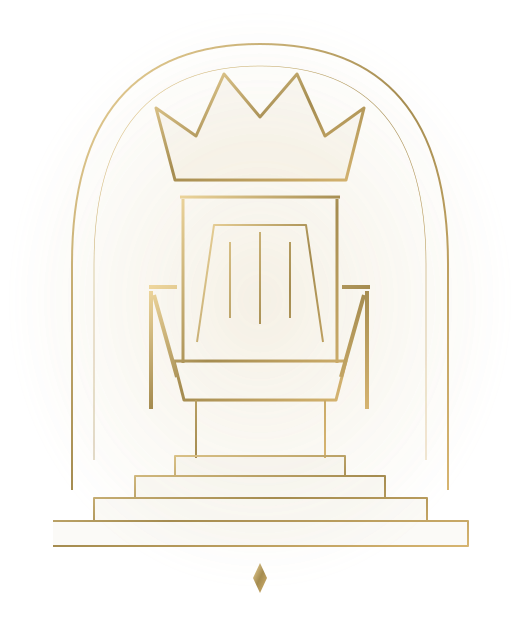
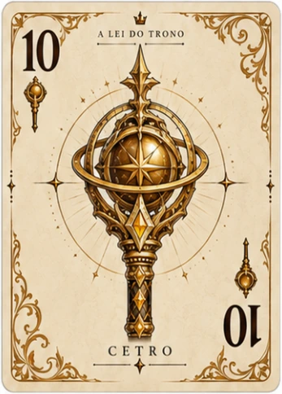
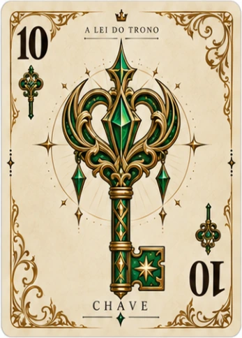
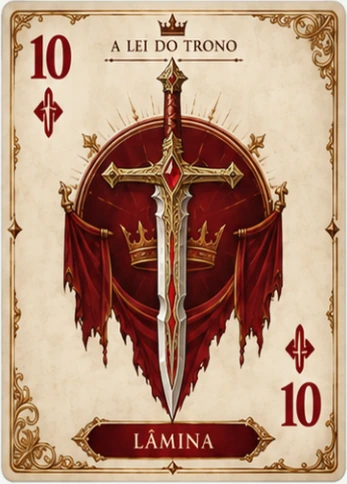
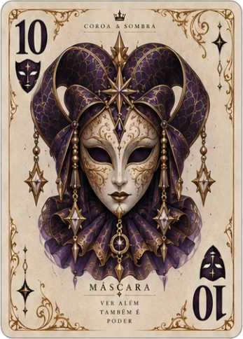
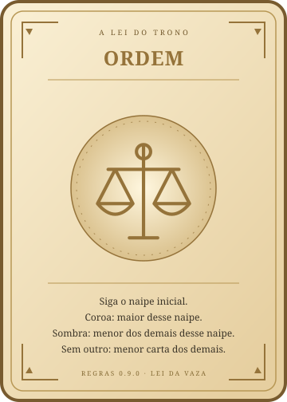
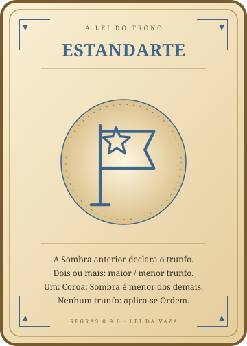
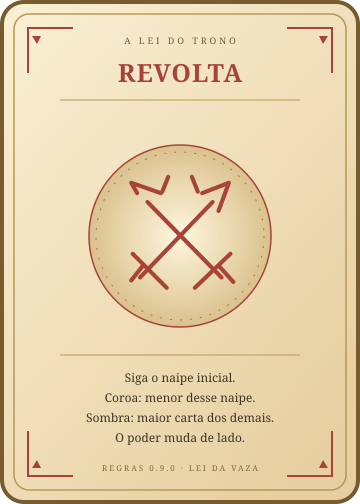
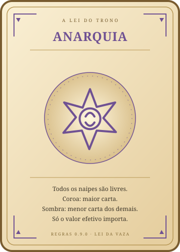
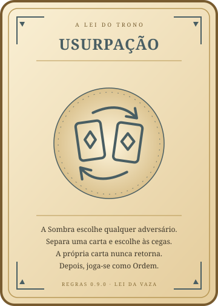

Quatro Casas disputam Prestígio. A Coroa conduz a mesa. A Sombra muda a Lei. Entre poder e astúcia, o equilíbrio decide quem ocupa o Trono.
4 jogadores3 rodadas10 vazas por rodada

I · PREPARE SUA CASA
A mesa e o objetivo
O baralho tem 48 cartas: Cetro, Chave, Lâmina e Máscara, cada naipe com valores de 1 a 12. São quatro jogadores; o modo digital pode completar vagas com Casas controladas pelo jogo.

Cetro

Chave

Lâmina

Máscara
A cada rodada, embaralhe o baralho inteiro e distribua 10 cartas por jogador. As 8 restantes não entram na rodada. São 10 vazas; em cada uma, todos jogam uma carta. O objetivo é acumular Coroas e Sombras, formando pares para ganhar Prestígio.
II · O RITMO DO PODER
Como a partida avança
Decrete a rodada. Quem possui o menor total acumulado de Coroas + Sombras escolhe entre dois Decretos sorteados. Empate entre Casas: sorteie o responsável. O Decreto fica fixo até o fim da rodada.
Abra com Ordem. Toda rodada começa com a Lei Ordem. Na primeira rodada, o líder é sorteado; nas seguintes, começa quem está à esquerda da Coroa da 10ª vaza anterior.
Jogue uma vaza. O líder abre. Em sentido de jogo, cada Casa joga uma carta permitida. No app, a ordem e as cartas válidas são indicadas automaticamente.
Resolva os títulos. Revele cartas ocultas e aplique seus modificadores. A Lei define uma Coroa e uma Sombra. Em qualquer empate de valor efetivo, vence quem jogou primeiro.
Prepare a próxima vaza. A Coroa abre a próxima vaza. A Sombra escolhe a próxima Lei. Aplique efeitos de fim de vaza, como Desafio e Rotação, antes de continuar.
Nas trocas, esquerda é a próxima Casa na ordem de jogo; direita é a Casa anterior. Conselho e Rotação são simultâneos: escolha usando sua mão atual, antes de receber a carta de outra Casa.
III · CINCO LEIS, CINCO CAMINHOS
Quem leva a Coroa? Quem leva a Sombra?
“Maior” e “menor” sempre consideram o valor efetivo da carta, depois da Influência. O naipe inicial é o naipe da carta que abre a vaza, mesmo quando ela é oculta.

LEI DA VAZA
Ordem
Siga o naipe inicial se puder. Coroa: maior valor desse naipe. Sombra: menor valor do mesmo naipe, entre os demais. Se ninguém além da Coroa seguiu o naipe, a menor carta dos demais recebe a Sombra.
Na mesa
Cetro 10 abre; Chave 4, Máscara 3 e Lâmina 8 seguem. Coroa: Cetro 10. Sem outro Cetro, Sombra: Máscara 3. Se Chave 4 fosse Cetro 4, esse Cetro seria a Sombra, mesmo existindo Máscara 3.

LEI DA VAZA
Estandarte
A Sombra anterior declara o trunfo. Você pode jogar trunfo mesmo tendo o naipe inicial; fora isso, siga o naipe se puder. Com dois ou mais trunfos: maior trunfo recebe a Coroa e menor dos demais trunfos recebe a Sombra. Com um trunfo: ele recebe a Coroa e a menor carta dos demais recebe a Sombra. Sem trunfos, aplica-se Ordem.
Na mesa
Trunfo declarado: Cetro. Máscara 12 abre; Cetro 8, Cetro 3 e Chave 1 seguem. Coroa: Cetro 8. Sombra: Cetro 3. A Máscara que abriu não recebe a Sombra. Com somente Cetro 8 na mesa, a Sombra seria Chave 1.

LEI DA VAZA
Revolta
Siga o naipe inicial se puder. A menor carta desse naipe recebe a Coroa; a maior carta entre os demais jogadores recebe a Sombra, independentemente do naipe.
Na mesa
Cetro 10 abre; Cetro 4, Máscara 12 e Chave 1 seguem. Coroa: Cetro 4. Sombra: Máscara 12. A Chave 1 não vence porque não pertence ao naipe inicial.

LEI DA VAZA
Anarquia
Jogue qualquer naipe. A maior carta recebe a Coroa; a menor carta entre os demais recebe a Sombra. Os naipes são ignorados.
Na mesa
Cetro 10 abre; Cetro 4, Máscara 12 e Chave 1 seguem. Coroa: Máscara 12. Sombra: Chave 1. Todos os naipes são livres.

LEI DA VAZA
Usurpação
Com pelo menos 4 cartas por jogador, a Sombra anterior escolhe qualquer adversário e separa uma carta para entregar. Escolhe uma carta fechada da mão desse adversário antes de entregar a sua, garantindo que nunca receba a própria carta de volta. Corte Aberta permanece protegida. Depois, joga-se como Ordem.
Na mesa
A Sombra separa Lâmina 2 e escolhe a Casa à sua frente. Escolhe uma posição entre as cartas fechadas dessa Casa e recebe Chave 9. Só então Lâmina 2 entra na mão da Casa escolhida. Não existe chance de pegar Lâmina 2 de volta.
IV · PODER EM SEGREDO
Influência da Corte
Ao terminar uma vaza sem receber Coroa nem Sombra, ganhe 1 Influência, até o máximo de 2. O saldo é zerado no começo da rodada; Favor Real concede 1 logo no início.
✦
Sigilo · custa 1
Jogue uma carta virada para baixo, sem mudar seu valor.
✦ ✦
Manobra da Corte · custa 2
Jogue oculta e escolha +3 ou −3 no valor efetivo, limitado entre 1 e 12. Ex.: 10 + 3 = 12; 2 − 3 = 1.
O gasto e a escolha do modificador são anunciados a todos imediatamente. Apenas a identidade da carta fica oculta até a resolução. A carta ainda precisa ser uma jogada válida sob a Lei; Influência não permite ignorar o naipe obrigatório. Ao abrir a vaza oculta, anuncie o naipe real da carta.
V · A VONTADE DA RODADA
Os dez Decretos
Um Decreto modifica a rodada inteira. Sua escolha acontece antes da primeira vaza e permanece fixa durante as dez vazas.
▣
Reserva
Cada jogador separa 1 carta. Ela fica fora da mão nas 9 primeiras vazas e deve ser jogada na 10ª.
⟳
Rotação
Após as vazas 7, 8 e 9, todos passam simultaneamente 1 carta ao jogador à esquerda.
◉
Corte Aberta
No início da rodada, cada jogador revela 1 carta da mão. Ela permanece pública até ser usada e é protegida da Usurpação e da Influência.
⚔
Desafio
Na primeira Coroa de cada jogador, revele 1 carta. Novas Coroas consecutivas revelam mais 1.
⊘
Silêncio
Nas 3 primeiras vazas, ninguém pode gastar Influência. A partir da 4ª, funciona normalmente.
♛
Sucessão
O próximo líder não pode abrir com o naipe que venceu a vaza anterior, salvo se não possuir outro.
⇄
Conselho
No início da rodada, todos escolhem 1 carta fechada e a passam simultaneamente ao jogador à direita.
✦
Favor Real
Todos começam a rodada com 1 Influência. O limite continua sendo 2.
◈
Espionagem
No início da rodada, cada jogador vê, em segredo, 1 carta aleatória da mão do jogador à direita. A carta não muda de mão nem se torna pública.
♜
Peso da Coroa
Quem ganhou a Coroa não pode gastar Influência na vaza seguinte. Na primeira vaza, ninguém está bloqueado por este Decreto.
VI · QUEM OCUPA O TRONO
Prestígio e vitória
Cada Coroa vale 1 Prestígio; cada Sombra vale 1 Prestígio. Cada par acumulado de uma Coroa e uma Sombra concede mais 2 Prestígios. Os títulos se acumulam ao longo das três rodadas; os pares não são zerados entre rodadas.
Prestígio = Coroas + Sombras + 2 × pares
Exemplo
5 Coroas e 3 Sombras formam 3 pares. Prestígio = 5 + 3 + 2 × 3 = 14. Uma Casa com 4 Coroas e 4 Sombras soma 16. Equilibrar poder e astúcia pode valer mais do que vencer todas as vazas.
Após a terceira rodada, vence quem possui mais Prestígio. Desempates, nesta ordem: mais pares, mais Coroas, mais Sombras. Se todos esses critérios continuarem iguais, o Trono é compartilhado.
Jogo e M&N, lado a lado
Você pode manter a chamada de voz do M&N ao entrar na mesa e navegar entre jogo e comunidade. A chamada e as mensagens selecionadas continuam independentes da partida. Sair da mesa preserva a chamada da comunidade; desconectar da conta encerra todas as participações. Se alguém abandonar uma partida em andamento, a Casa continua com uma IA.